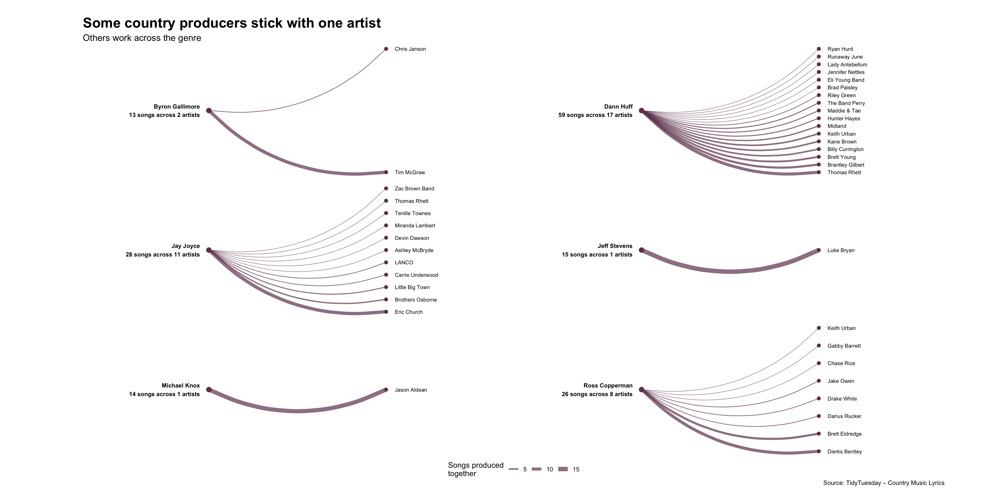
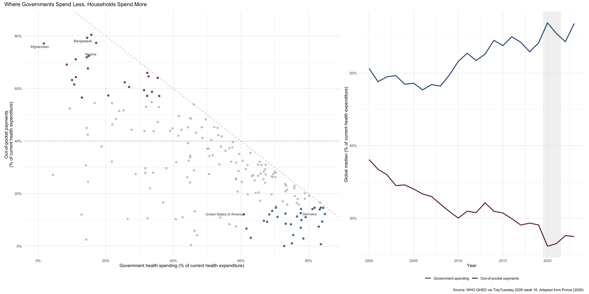

HVL
TidyTuesday gives us a practical way to develop important data science skills (Arroyo 2022).
Make for example a figure with ggplot, an analysis, model or Quarto report, and share the result and your code on social media with the #TidyTuesday hashtag
library(tidyverse)
# Load data
country_lyrics <- read_csv(
"https://raw.githubusercontent.com/rfordatascience/tidytuesday/main/data/2026/2026-08-25/country_lyrics.csv",
show_col_types = FALSE
)
# Select producers
selected_producers <- c(
"Michael Knox",
"Jeff Stevens",
"Byron Gallimore",
"Ross Copperman",
"Jay Joyce",
"Dann Huff"
)
# Clean and summarise data
producer_data <- country_lyrics |>
filter(!is.na(producer)) |>
separate_longer_delim(producer, delim = ",") |>
mutate(producer = str_squish(producer)) |>
filter(producer %in% selected_producers) |>
count(producer, artist, name = "number_of_songs") |>
group_by(producer) |>
arrange(desc(number_of_songs), artist, .by_group = TRUE) |>
mutate(
artist_position = row_number(),
producer_position = (n() + 1) / 2
) |>
ungroup()
# Producer labels and totals
producer_summary <- producer_data |>
group_by(producer) |>
summarise(
producer_position = first(producer_position),
total_songs = sum(number_of_songs),
number_of_artists = n_distinct(artist),
.groups = "drop"
) |>
mutate(
label = paste0(
producer, "\n",
total_songs, " songs across ",
number_of_artists, " artists"
)
)
# Create the figure
ggplot(producer_data) +
geom_curve(
aes(
x = 0,
y = producer_position,
xend = 1,
yend = artist_position,
linewidth = number_of_songs
),
curvature = 0.25,
colour = "#70405D",
alpha = 0.7
) +
geom_point(
data = producer_summary,
aes(x = 0, y = producer_position),
size = 3,
colour = "#70405D"
) +
geom_point(
aes(x = 1, y = artist_position),
size = 2,
colour = "#70405D"
) +
geom_text(
data = producer_summary,
aes(x = -0.05, y = producer_position, label = label),
hjust = 1,
fontface = "bold",
size = 3
) +
geom_text(
aes(x = 1.05, y = artist_position, label = artist),
hjust = 0,
size = 2.7
) +
facet_wrap(~ producer, ncol = 2, scales = "free_y") +
scale_linewidth_continuous(
range = c(0.3, 3),
name = "Songs produced\ntogether"
) +
coord_cartesian(
xlim = c(-0.6, 1.6),
clip = "off"
) +
labs(
title = "Some country producers stick with one artist",
subtitle = "Others work across the genre",
caption = "Source: TidyTuesday – Country Music Lyrics"
) +
theme_void() +
theme(
plot.title = element_text(
size = 20,
face = "bold"
),
plot.subtitle = element_text(size = 13),
strip.text = element_blank(),
legend.position = "bottom",
plot.margin = margin(20, 80, 20, 120)
)
WHO Global Health Expenditure Database (TidyTuesday 2026, week 16)
library(tidyverse)
library(scales)
library(ggrepel)
library(patchwork)
# 1. Les inn data
tt <- tidytuesdayR::tt_load(2026, week = 16)
health_spending <- tt$health_spending
financing_schemes <- tt$financing_schemes
unit_pct <- "% of current health expenditure"
# 2. Panel A: siste tilgjengelige år per land
gov_data <- health_spending |>
filter(indicator_code == "gghed_che", unit == unit_pct) |>
group_by(iso3_code, country_name) |>
slice_max(year, n = 1, with_ties = FALSE) |>
ungroup() |>
select(iso3_code, country_name, gghed_che = value)
oop_data <- financing_schemes |>
filter(indicator_code == "hf3_che", unit == unit_pct) |>
group_by(iso3_code) |>
slice_max(year, n = 1, with_ties = FALSE) |>
ungroup() |>
select(iso3_code, oops_che = value)
scatter_data <- gov_data |>
inner_join(oop_data, by = "iso3_code") |>
drop_na(gghed_che, oops_che) |>
filter(gghed_che + oops_che <= 115) |>
mutate(
highlight = case_when(
oops_che >= 55 ~ "high_oop",
oops_che <= 15 & gghed_che >= 60 ~ "protected",
TRUE ~ "other"
),
label = if_else(iso3_code %in% c("AFG", "BGD", "NGA", "DEU", "USA"),
country_name, NA_character_)
)
# 3. Panel B: globale medianer per år
trend_data <- bind_rows(
health_spending |>
filter(indicator_code == "gghed_che", unit == unit_pct, year >= 2000) |>
group_by(year) |>
summarise(median_pct = median(value, na.rm = TRUE), .groups = "drop") |>
mutate(series = "gov"),
financing_schemes |>
filter(indicator_code == "hf3_che", unit == unit_pct, year >= 2000) |>
group_by(year) |>
summarise(median_pct = median(value, na.rm = TRUE), .groups = "drop") |>
mutate(series = "oop")
)
cols <- c(high_oop = "#722F37", protected = "#2E5A87", other = "gray75",
gov = "#2E5A87", oop = "#722F37")
# 4. Plott A
p_scatter <- ggplot(scatter_data, aes(gghed_che, oops_che, color = highlight)) +
geom_abline(slope = -1, intercept = 100, linetype = "dashed", color = "gray70") +
geom_hline(yintercept = 40, linetype = "dotted", color = "#722F37") +
geom_point(size = 2, alpha = 0.8) +
geom_text_repel(aes(label = label), color = "gray25", size = 3,
na.rm = TRUE, seed = 123) +
scale_color_manual(values = cols, guide = "none") +
scale_x_continuous(limits = c(0, 85), labels = label_number(suffix = "%")) +
scale_y_continuous(limits = c(0, 85), labels = label_number(suffix = "%")) +
labs(x = "Government health spending (% of current health expenditure)",
y = "Out-of-pocket payments\n(% of current health expenditure)") +
theme_minimal()
# 5. Plott B
p_trend <- ggplot(trend_data, aes(year, median_pct, color = series)) +
annotate("rect", xmin = 2019.5, xmax = 2021.5, ymin = -Inf, ymax = Inf,
fill = "gray90", alpha = 0.5) +
geom_line(linewidth = 1.1) +
scale_color_manual(
values = cols,
labels = c(gov = "Government spending", oop = "Out-of-pocket payments"),
name = NULL
) +
scale_y_continuous(labels = label_number(suffix = "%")) +
labs(x = "Year", y = "Global median (% of current health expenditure)") +
theme_minimal() +
theme(legend.position = "bottom")
# 6. Sett sammen
p_scatter + p_trend +
plot_layout(widths = c(1.4, 1)) +
plot_annotation(
title = "Where Governments Spend Less, Households Spend More",
caption = "Source: WHO GHED via TidyTuesday 2026 week 16. Adapted from Ponce (2026)."
)Ponce (2026) finds that households pay more where governments spend less.

hhhh
Assignment 2; Seminar Autumn 2026